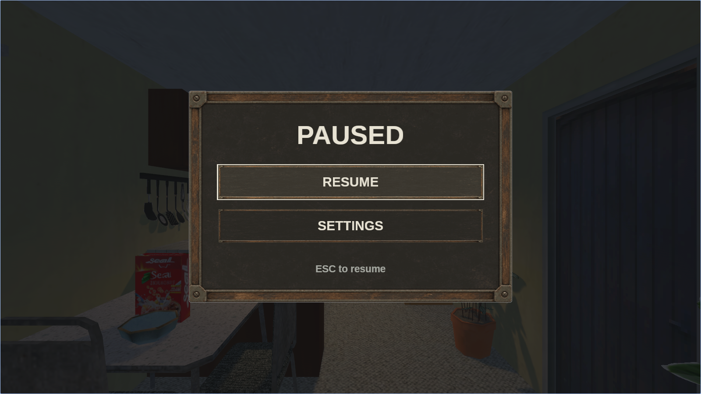
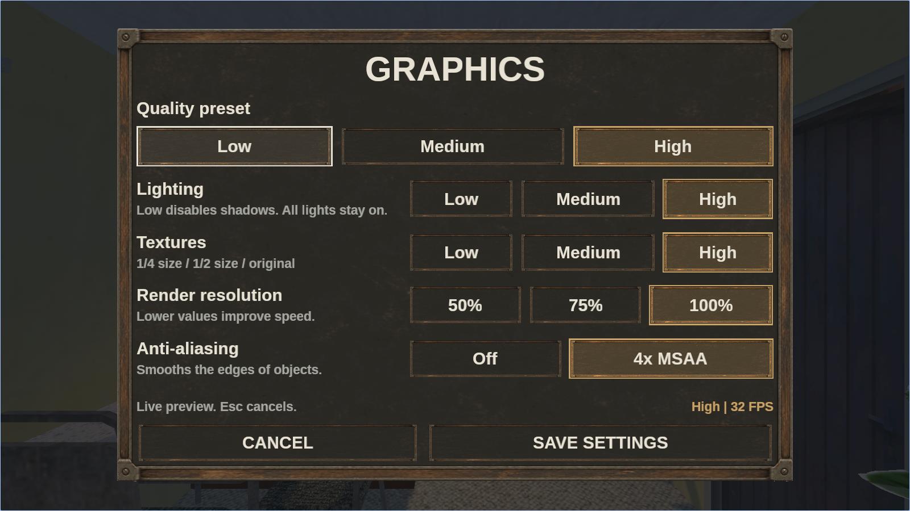

Historical report: these measurements include texture and render-resolution reductions that have since been removed. Current presets always use native resolution and original textures. See the current anti-aliasing checks.
Escape pauses the existing world. Settings provide live preview, per-device saving and cancellation. High retains the original appearance; Medium and Low deliberately reduce quality.
Intel Iris Xe, Chromium, real WebGPU. Two 15-second samples per cell, same fixed viewpoints. Mean canvas acquisitions per second, not guaranteed displayed FPS. Builds and other GPU tests were stopped while measuring.
| Physical canvas | View | High | Medium | Low |
|---|---|---|---|---|
| 1600 × 900 | apartment | 34.0 | 59.0 (+73%) | 59.3 (+74%) |
| 1600 × 900 | court-from-window | 28.1 | 59.0 (+110%) | 59.8 (+113%) |
| 3073 × 1920 | apartment | 15.1 | 35.4 (+134%) | 57.1 (+278%) |
| 3073 × 1920 | court-from-window | 11.4 | 24.7 (+116%) | 55.1 (+382%) |
Gains are relative to High in this settings build. Lower presets turn down shadows, texture dimensions, 3D resolution and MSAA. These gains involve the quality tradeoffs selected by the user.
The generated wood-and-metal skin is shared by panels and buttons. Its compressed PNG is 97,946 bytes; the 512×512 RGBA texture uses 1 MiB on the GPU, excluding the CPU copy and font atlases. Text is rendered separately for sharpness.

13 High screenshots compared at native canvas resolution against the previously verified optimization build: 825 changed pixels across all comparisons. This is not a bit-exact match; the largest difference count is 623 pixels in a 5.9-million-pixel image. High retains the original quality settings. Two repeated captures of the new build matched exactly; the remaining differences are relative to the earlier build, not explained by capture instability. No visible quality reduction was identified in inspection.
11 Rust tests, 4 scene-export tests and benchmark metric self-checks passed. Keyboard focus, selection states, pause/resume and responsive scrolling were exercised. The UI detector reported no findings; it offers limited coverage of Rust UI code.

Summary and rangesBrowser interaction checks1600px pixel comparison3073px pixel comparisonRepeat capture comparison
1600 high 1600 medium 1600 low 3073 high 3073 medium 3073 low
Not checked: native GPU execution, Windows/macOS persistence and other GPUs/browsers. Performance depends on hardware and resolution. Menu FPS measures rendering cadence while paused; benchmark figures above are collected during gameplay.